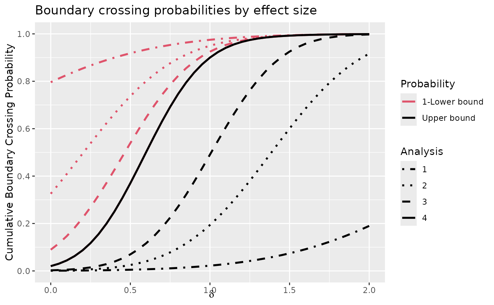
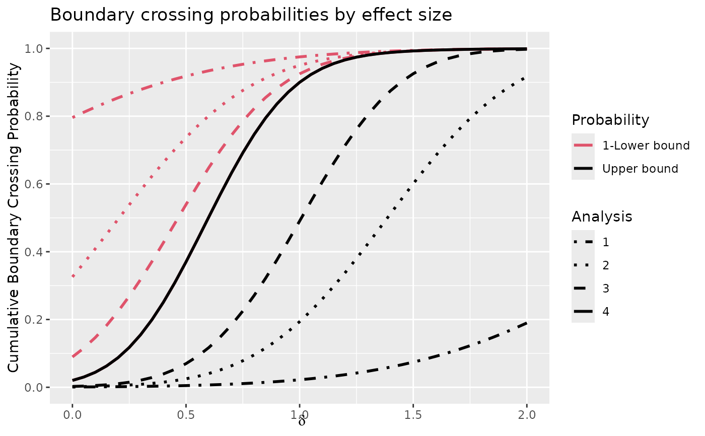

gsDesign() is used to find boundaries and trial size required for a
group sequential design.
Many parameters normally take on default values and thus do not require
explicit specification. One- and two-sided designs are supported. Two-sided
designs may be symmetric or asymmetric. Wang-Tsiatis designs, including
O'Brien-Fleming and Pocock designs can be generated. Designs with common
spending functions as well as other built-in and user-specified functions
for Type I error and futility are supported. Type I error computations for
asymmetric designs may assume binding or non-binding lower bounds. The print
function has been extended using print.gsDesign() to print
gsDesign objects; see examples.
The user may ignore the structure of the value returned by gsDesign()
if the standard printing and plotting suffice; see examples.
delta and n.fix are used together to determine what sample
size output options the user seeks. The default, delta=0 and
n.fix=1, results in a ‘generic’ design that may be used with
any sampling situation. Sample size ratios are provided and the user
multiplies these times the sample size for a fixed design to obtain the
corresponding group sequential analysis times. If delta>0,
n.fix is ignored, and delta is taken as the standardized
effect size - the signal to noise ratio for a single observation; for
example, the mean divided by the standard deviation for a one-sample normal
problem. In this case, the sample size at each analysis is computed. When
delta=0 and n.fix>1, n.fix is assumed to be the sample
size for a fixed design with no interim analyses. See examples below.
Following are further comments on the input argument test.type which
is used to control what type of error measurements are used in trial design.
The manual may also be worth some review in order to see actual formulas for
boundary crossing probabilities for the various options. Options 3 and 5
assume the trial stops if the lower bound is crossed for Type I and Type II
error computation (binding lower bound). For the purpose of computing Type
I error, options 4 and 6 assume the trial continues if the lower bound is
crossed (non-binding lower bound); that is a Type I error can be made by
crossing an upper bound after crossing a previous lower bound.
Beta-spending refers to error spending for the lower bound crossing
probabilities under the alternative hypothesis (options 3 and 4). In this
case, the final analysis lower and upper boundaries are assumed to be the
same. The appropriate total beta spending (power) is determined by adjusting
the maximum sample size through an iterative process for all options. Since
options 3 and 4 must compute boundary crossing probabilities under both the
null and alternative hypotheses, deriving these designs can take longer than
other options. Options 5 and 6 compute lower bound spending under the null
hypothesis.
Usage
gsDesign(
k = 3,
test.type = 4,
alpha = 0.025,
beta = 0.1,
astar = 0,
delta = 0,
n.fix = 1,
timing = 1,
sfu = sfHSD,
sfupar = -4,
sfl = sfHSD,
sflpar = -2,
tol = 1e-06,
r = 18,
n.I = 0,
maxn.IPlan = 0,
nFixSurv = 0,
endpoint = NULL,
delta1 = 1,
delta0 = 0,
overrun = 0,
usTime = NULL,
lsTime = NULL
)
# S3 method for class 'gsDesign'
xtable(
x,
caption = NULL,
label = NULL,
align = NULL,
digits = NULL,
display = NULL,
...
)Arguments
- k
Number of analyses planned, including interim and final.
- test.type
1=one-sided2=two-sided symmetric3=two-sided, asymmetric, beta-spending with binding lower bound4=two-sided, asymmetric, beta-spending with non-binding lower bound5=two-sided, asymmetric, lower bound spending under the null hypothesis with binding lower bound6=two-sided, asymmetric, lower bound spending under the null hypothesis with non-binding lower bound.
See details, examples and manual.- alpha
Type I error, always one-sided. Default value is 0.025.
- beta
Type II error, default value is 0.1 (90% power).
- astar
Normally not specified. If
test.type=5or6,astarspecifies the total probability of crossing a lower bound at all analyses combined. This will be changed to \(1 - \)alphawhen default value of 0 is used. Since this is the expected usage, normallyastaris not specified by the user.- delta
Effect size for theta under alternative hypothesis. This can be set to the standardized effect size to generate a sample size if
n.fix=NULL. See details and examples.- n.fix
Sample size for fixed design with no interim; used to find maximum group sequential sample size. For a time-to-event outcome, input number of events required for a fixed design rather than sample size and enter fixed design sample size (optional) in
nFixSurv. See details and examples.- timing
Sets relative timing of interim analyses. Default of 1 produces equally spaced analyses. Otherwise, this is a vector of length
kork-1. The values should satisfy0 < timing[1] < timing[2] < ... < timing[k-1] < timing[k]=1.- sfu
A spending function or a character string indicating a boundary type (that is, “WT” for Wang-Tsiatis bounds, “OF” for O'Brien-Fleming bounds and “Pocock” for Pocock bounds). For one-sided and symmetric two-sided testing is used to completely specify spending (
test.type=1, 2),sfu. The default value issfHSDwhich is a Hwang-Shih-DeCani spending function. See details,vignette("SpendingFunctionOverview"), manual and examples.- sfupar
Real value, default is \(-4\) which is an O'Brien-Fleming-like conservative bound when used with the default Hwang-Shih-DeCani spending function. This is a real-vector for many spending functions. The parameter
sfuparspecifies any parameters needed for the spending function specified bysfu; this is not needed for spending functions (sfLDOF,sfLDPocock) or bound types (“OF”, “Pocock”) that do not require parameters. Note thatsfuparcan be specified as a positive scalar forsfLDOFfor a generalized O'Brien-Fleming spending function.- sfl
Specifies the spending function for lower boundary crossing probabilities when asymmetric, two-sided testing is performed (
test.type = 3,4,5, or6). Unlike the upper bound, only spending functions are used to specify the lower bound. The default value issfHSDwhich is a Hwang-Shih-DeCani spending function. The parametersflis ignored for one-sided testing (test.type=1) or symmetric 2-sided testing (test.type=2). See details, spending functions, manual and examples.- sflpar
Real value, default is \(-2\), which, with the default Hwang-Shih-DeCani spending function, specifies a less conservative spending rate than the default for the upper bound.
- tol
Tolerance for error (default is 0.000001). Normally this will not be changed by the user. This does not translate directly to number of digits of accuracy, so use extra decimal places.
- r
Integer value (>= 1 and <= 80) controlling the number of numerical integration grid points. Default is 18, as recommended by Jennison and Turnbull (2000). Grid points are spread out in the tails for accurate probability calculations. Larger values provide more grid points and greater accuracy but slow down computation. Jennison and Turnbull (p. 350) note an accuracy of \(10^{-6}\) with
r = 16. This parameter is normally not changed by users.- n.I
Used for re-setting bounds when timing of analyses changes from initial design; see examples.
- maxn.IPlan
Used for re-setting bounds when timing of analyses changes from initial design; see examples.
- nFixSurv
If a time-to-event variable is used,
nFixSurvcomputed as the sample size fromnSurvivalmay be entered to havegsDesigncompute the total sample size required as well as the number of events at each analysis that will be returned inn.fix; this is rounded up to an even number.- endpoint
An optional character string that should represent the type of endpoint used for the study. This may be used by output functions. Types most likely to be recognized initially are "TTE" for time-to-event outcomes with fixed design sample size generated by
nSurvival()and "Binomial" for 2-sample binomial outcomes with fixed design sample size generated bynBinomial().- delta1
delta1anddelta0may be used to store information about the natural parameter scale compared todeltathat is a standardized effect size.delta1is the alternative hypothesis parameter value on the natural parameter scale (e.g., the difference in two binomial rates).- delta0
delta0is the null hypothesis parameter value on the natural parameter scale.- overrun
Scalar or vector of length
k-1with patients enrolled that are not included in each interim analysis.- usTime
Default is NULL in which case upper bound spending time is determined by
timing. Otherwise, this should be a vector of lengthkwith the spending time at each analysis (see Details).- lsTime
Default is NULL in which case lower bound spending time is determined by
timing. Otherwise, this should be a vector of lengthkwith the spending time at each analysis (see Details).- x
An R object of class found among
methods(xtable). See below on how to write additional method functions forxtable.- caption
Character vector of length 1 or 2 containing the table's caption or title. If length is 2, the second item is the "short caption" used when LaTeX generates a "List of Tables". Set to
NULLto suppress the caption. Default value isNULL.- label
Character vector of length 1 containing the LaTeX label or HTML anchor. Set to
NULLto suppress the label. Default value isNULL.- align
Character vector of length equal to the number of columns of the resulting table, indicating the alignment of the corresponding columns. Also,
"|"may be used to produce vertical lines between columns in LaTeX tables, but these are effectively ignored when considering the required length of the supplied vector. If a character vector of length one is supplied, it is split asstrsplit(align, "")[[1]]before processing. Since the row names are printed in the first column, the length ofalignis one greater thanncol(x)ifxis adata.frame. Use"l","r", and"c"to denote left, right, and center alignment, respectively. Use"p{3cm}"etc. for a LaTeX column of the specified width. For HTML output the"p"alignment is interpreted as"l", ignoring the width request. Default depends on the class ofx.- digits
Numeric vector of length equal to one (in which case it will be replicated as necessary) or to the number of columns of the resulting table or matrix of the same size as the resulting table, indicating the number of digits to display in the corresponding columns. Since the row names are printed in the first column, the length of the vector
digitsor the number of columns of the matrixdigitsis one greater thanncol(x)ifxis adata.frame. Default depends on the class ofx. If values ofdigitsare negative, the corresponding values ofxare displayed in scientific format withabs(digits)digits.- display
Character vector of length equal to the number of columns of the resulting table, indicating the format for the corresponding columns. Since the row names are printed in the first column, the length of
displayis one greater thanncol(x)ifxis adata.frame. These values are passed to theformatCfunction. Use"d"(for integers),"f","e","E","g","G","fg"(for reals), or"s"(for strings)."f"gives numbers in the usualxxx.xxxformat;"e"and"E"given.ddde+nnorn.dddE+nn(scientific format);"g"and"G"putx[i]into scientific format only if it saves space to do so."fg"uses fixed format as"f", butdigitsas number of significant digits. Note that this can lead to quite long result strings. Default depends on the class ofx.- ...
Additional arguments. (Currently ignored.)
Value
An object of the class gsDesign. This class has the following
elements and upon return from gsDesign() contains:
- k
As input.
- test.type
As input.
- alpha
As input.
- beta
As input.
- astar
As input, except when
test.type=5or6andastaris input as 0; in this caseastaris changed to1-alpha.- delta
The standardized effect size for which the design is powered. Will be as input to
gsDesign()unless it was input as 0; in that case, value will be computed to give desired power for fixed design with input sample sizen.fix.- n.fix
Sample size required to obtain desired power when effect size is
delta.- timing
A vector of length
kcontaining the portion of the total planned information or sample size at each analysis.- tol
As input.
- r
As input.
- n.I
Vector of length
k. If values are input, same values are output. Otherwise,n.Iwill contain the sample size required at each analysis to achieve desiredtimingandbetafor the output value ofdelta. Ifdelta=0was input, then this is the sample size required for the specified group sequential design when a fixed design requires a sample size ofn.fix. Ifdelta=0andn.fix=1then this is the relative sample size compared to a fixed design; see details and examples.- maxn.IPlan
As input.
- nFixSurv
As input.
- nSurv
Sample size for Lachin and Foulkes method when
nSurvivalis used for fixed design input. IfnSurvivalis used to computen.fix, thennFixSurvis inflated by the same amount asn.fixand stored innSurv. Note that if you usegsSurvfor time-to-event sample size, this is not needed and a more complete output summary is given.- endpoint
As input.
- delta1
As input.
- delta0
As input.
- overrun
As input.
- usTime
As input.
- lsTime
As input.
- upper
Upper bound spending function, boundary and boundary crossing probabilities under the NULL and alternate hypotheses. See
vignette("SpendingFunctionOverview")and manual for further details.- lower
Lower bound spending function, boundary and boundary crossing probabilities at each analysis. Lower spending is under alternative hypothesis (beta spending) for
test.type=3or4. Fortest.type=2,5or6, lower spending is under the null hypothesis. Fortest.type=1, output value isNULL. Seevignette("SpendingFunctionOverview")and manual.- theta
Standarized effect size under null (0) and alternate hypothesis. If
deltais input,theta[1]=delta. Ifn.fixis input,theta[1]is computed using a standard sample size formula (pseudocode):((Zalpha+Zbeta)/theta[1])^2=n.fix.- falseprobnb
For
test.type=4or6, this contains false positive probabilities under the null hypothesis assuming that crossing a futility bound does not stop the trial.- en
Expected sample size accounting for early stopping. For time-to-event outcomes, this would be the expected number of events (although
gsSurvwill give expected sample size). For information-based-design, this would give the expected information when the trial stops. Ifoverrunis specified, the expected sample size includes the overrun at each interim.
An object of class "xtable" with attributes specifying formatting options for a table
Note
The gsDesign technical manual is available at https://keaven.github.io/gsd-tech-manual/.
References
Jennison C and Turnbull BW (2000), Group Sequential Methods with Applications to Clinical Trials. Boca Raton: Chapman and Hall. Lan KK, DeMets DL (1989). Group sequential procedures: calendar versus information time. Statistics in medicine 8(10):1191-8. Liu, Q, Lim, P, Nuamah, I, and Li, Y (2012), On adaptive error spending approach for group sequential trials with random information levels. Journal of biopharmaceutical statistics; 22(4), 687-699.
Author
Keaven Anderson keaven_anderson@merck.com
Examples
library(ggplot2)
# symmetric, 2-sided design with O'Brien-Fleming-like boundaries
# lower bound is non-binding (ignored in Type I error computation)
# sample size is computed based on a fixed design requiring n=800
x <- gsDesign(k = 5, test.type = 2, n.fix = 800)
# note that "x" below is equivalent to print(x) and print.gsDesign(x)
x
#> Symmetric two-sided group sequential design with
#> 90 % power and 2.5 % Type I Error.
#> Spending computations assume trial stops
#> if a bound is crossed.
#>
#>
#> Analysis N Z Nominal p Spend
#> 1 164 3.25 0.0006 0.0006
#> 2 328 2.99 0.0014 0.0013
#> 3 492 2.69 0.0036 0.0028
#> 4 656 2.37 0.0088 0.0063
#> 5 819 2.03 0.0214 0.0140
#> Total 0.0250
#>
#> ++ alpha spending:
#> Hwang-Shih-DeCani spending function with gamma = -4.
#>
#> Boundary crossing probabilities and expected sample size
#> assume any cross stops the trial
#>
#> Upper boundary (power or Type I Error)
#> Analysis
#> Theta 1 2 3 4 5 Total E{N}
#> 0.0000 0.0006 0.0013 0.0028 0.0063 0.0140 0.025 812.8
#> 0.1146 0.0370 0.1512 0.2647 0.2699 0.1771 0.900 589.3
#>
#> Lower boundary (futility or Type II Error)
#> Analysis
#> Theta 1 2 3 4 5 Total
#> 0.0000 6e-04 0.0013 0.0028 0.0063 0.014 0.025
#> 0.1146 0e+00 0.0000 0.0000 0.0000 0.000 0.000
plot(x)
plot(x, plottype = 2)
 # Assuming after trial was designed actual analyses occurred after
# 300, 600, and 860 patients, reset bounds
y <- gsDesign(
k = 3, test.type = 2, n.fix = 800, n.I = c(300, 600, 860),
maxn.IPlan = x$n.I[x$k]
)
y
#> Symmetric two-sided group sequential design with
#> 90 % power and 2.5 % Type I Error.
#> Spending computations assume trial stops
#> if a bound is crossed.
#>
#>
#> Analysis N Z Nominal p Spend
#> 1 300 2.96 0.0016 0.0016
#> 2 600 2.44 0.0074 0.0067
#> 3 860 2.01 0.0220 0.0167
#> Total 0.0250
#>
#> ++ alpha spending:
#> Hwang-Shih-DeCani spending function with gamma = -4.
#>
#> Boundary crossing probabilities and expected sample size
#> assume any cross stops the trial
#>
#> Upper boundary (power or Type I Error)
#> Analysis
#> Theta 1 2 3 Total E{N}
#> 0.0000 0.0016 0.0067 0.0167 0.0250 854.8
#> 0.1146 0.1655 0.4833 0.2654 0.9142 641.6
#>
#> Lower boundary (futility or Type II Error)
#> Analysis
#> Theta 1 2 3 Total
#> 0.0000 0.0016 0.0067 0.0167 0.025
#> 0.1146 0.0000 0.0000 0.0000 0.000
# asymmetric design with user-specified spending that is non-binding
# sample size is computed relative to a fixed design with n=1000
sfup <- c(.033333, .063367, .1)
sflp <- c(.25, .5, .75)
timing <- c(.1, .4, .7)
x <- gsDesign(
k = 4, timing = timing, sfu = sfPoints, sfupar = sfup, sfl = sfPoints,
sflpar = sflp, n.fix = 1000
)
x
#> Asymmetric two-sided group sequential design with
#> 90 % power and 2.5 % Type I Error.
#> Upper bound spending computations assume
#> trial continues if lower bound is crossed.
#>
#> ----Lower bounds---- ----Upper bounds-----
#> Analysis N Z Nominal p Spend+ Z Nominal p Spend++
#> 1 123 -0.83 0.2041 0.025 3.14 0.0008 0.0008
#> 2 489 0.39 0.6513 0.025 3.16 0.0008 0.0008
#> 3 855 1.26 0.8966 0.025 3.06 0.0011 0.0009
#> 4 1222 1.98 0.9761 0.025 1.98 0.0239 0.0225
#> Total 0.1000 0.0250
#> + lower bound beta spending (under H1):
#> User-specified spending function with Points = 0.25, Points = 0.5, Points = 0.75, Points = 1.
#> ++ alpha spending:
#> User-specified spending function with Points = 0.03333, Points = 0.06337, Points = 0.1, Points = 1.
#>
#> Boundary crossing probabilities and expected sample size
#> assume any cross stops the trial
#>
#> Upper boundary (power or Type I Error)
#> Analysis
#> Theta 1 2 3 4 Total E{N}
#> 0.0000 0.0008 0.0007 0.0009 0.0177 0.0202 564.0
#> 0.1025 0.0222 0.1716 0.2969 0.4094 0.9000 907.4
#>
#> Lower boundary (futility or Type II Error)
#> Analysis
#> Theta 1 2 3 4 Total
#> 0.0000 0.2041 0.4703 0.2361 0.0693 0.9798
#> 0.1025 0.0250 0.0250 0.0250 0.0250 0.1000
plot(x)
# Assuming after trial was designed actual analyses occurred after
# 300, 600, and 860 patients, reset bounds
y <- gsDesign(
k = 3, test.type = 2, n.fix = 800, n.I = c(300, 600, 860),
maxn.IPlan = x$n.I[x$k]
)
y
#> Symmetric two-sided group sequential design with
#> 90 % power and 2.5 % Type I Error.
#> Spending computations assume trial stops
#> if a bound is crossed.
#>
#>
#> Analysis N Z Nominal p Spend
#> 1 300 2.96 0.0016 0.0016
#> 2 600 2.44 0.0074 0.0067
#> 3 860 2.01 0.0220 0.0167
#> Total 0.0250
#>
#> ++ alpha spending:
#> Hwang-Shih-DeCani spending function with gamma = -4.
#>
#> Boundary crossing probabilities and expected sample size
#> assume any cross stops the trial
#>
#> Upper boundary (power or Type I Error)
#> Analysis
#> Theta 1 2 3 Total E{N}
#> 0.0000 0.0016 0.0067 0.0167 0.0250 854.8
#> 0.1146 0.1655 0.4833 0.2654 0.9142 641.6
#>
#> Lower boundary (futility or Type II Error)
#> Analysis
#> Theta 1 2 3 Total
#> 0.0000 0.0016 0.0067 0.0167 0.025
#> 0.1146 0.0000 0.0000 0.0000 0.000
# asymmetric design with user-specified spending that is non-binding
# sample size is computed relative to a fixed design with n=1000
sfup <- c(.033333, .063367, .1)
sflp <- c(.25, .5, .75)
timing <- c(.1, .4, .7)
x <- gsDesign(
k = 4, timing = timing, sfu = sfPoints, sfupar = sfup, sfl = sfPoints,
sflpar = sflp, n.fix = 1000
)
x
#> Asymmetric two-sided group sequential design with
#> 90 % power and 2.5 % Type I Error.
#> Upper bound spending computations assume
#> trial continues if lower bound is crossed.
#>
#> ----Lower bounds---- ----Upper bounds-----
#> Analysis N Z Nominal p Spend+ Z Nominal p Spend++
#> 1 123 -0.83 0.2041 0.025 3.14 0.0008 0.0008
#> 2 489 0.39 0.6513 0.025 3.16 0.0008 0.0008
#> 3 855 1.26 0.8966 0.025 3.06 0.0011 0.0009
#> 4 1222 1.98 0.9761 0.025 1.98 0.0239 0.0225
#> Total 0.1000 0.0250
#> + lower bound beta spending (under H1):
#> User-specified spending function with Points = 0.25, Points = 0.5, Points = 0.75, Points = 1.
#> ++ alpha spending:
#> User-specified spending function with Points = 0.03333, Points = 0.06337, Points = 0.1, Points = 1.
#>
#> Boundary crossing probabilities and expected sample size
#> assume any cross stops the trial
#>
#> Upper boundary (power or Type I Error)
#> Analysis
#> Theta 1 2 3 4 Total E{N}
#> 0.0000 0.0008 0.0007 0.0009 0.0177 0.0202 564.0
#> 0.1025 0.0222 0.1716 0.2969 0.4094 0.9000 907.4
#>
#> Lower boundary (futility or Type II Error)
#> Analysis
#> Theta 1 2 3 4 Total
#> 0.0000 0.2041 0.4703 0.2361 0.0693 0.9798
#> 0.1025 0.0250 0.0250 0.0250 0.0250 0.1000
plot(x)
 plot(x, plottype = 2)

# same design, but with relative sample sizes
gsDesign(
k = 4, timing = timing, sfu = sfPoints, sfupar = sfup, sfl = sfPoints,
sflpar = sflp
)
#> Asymmetric two-sided group sequential design with
#> 90 % power and 2.5 % Type I Error.
#> Upper bound spending computations assume
#> trial continues if lower bound is crossed.
#>
#> Sample
#> Size ----Lower bounds---- ----Upper bounds-----
#> Analysis Ratio* Z Nominal p Spend+ Z Nominal p Spend++
#> 1 0.122 -0.83 0.2041 0.025 3.14 0.0008 0.0008
#> 2 0.488 0.39 0.6513 0.025 3.16 0.0008 0.0008
#> 3 0.855 1.26 0.8966 0.025 3.06 0.0011 0.0009
#> 4 1.221 1.98 0.9761 0.025 1.98 0.0239 0.0225
#> Total 0.1000 0.0250
#> + lower bound beta spending (under H1):
#> User-specified spending function with Points = 0.25, Points = 0.5, Points = 0.75, Points = 1.
#> ++ alpha spending:
#> User-specified spending function with Points = 0.03333, Points = 0.06337, Points = 0.1, Points = 1.
#> * Sample size ratio compared to fixed design with no interim
#>
#> Boundary crossing probabilities and expected sample size
#> assume any cross stops the trial
#>
#> Upper boundary (power or Type I Error)
#> Analysis
#> Theta 1 2 3 4 Total E{N}
#> 0.0000 0.0008 0.0007 0.0009 0.0177 0.0202 0.5640
#> 3.2415 0.0222 0.1716 0.2969 0.4094 0.9000 0.9074
#>
#> Lower boundary (futility or Type II Error)
#> Analysis
#> Theta 1 2 3 4 Total
#> 0.0000 0.2041 0.4703 0.2361 0.0693 0.9798
#> 3.2415 0.0250 0.0250 0.0250 0.0250 0.1000
plot(x, plottype = 2)

# same design, but with relative sample sizes
gsDesign(
k = 4, timing = timing, sfu = sfPoints, sfupar = sfup, sfl = sfPoints,
sflpar = sflp
)
#> Asymmetric two-sided group sequential design with
#> 90 % power and 2.5 % Type I Error.
#> Upper bound spending computations assume
#> trial continues if lower bound is crossed.
#>
#> Sample
#> Size ----Lower bounds---- ----Upper bounds-----
#> Analysis Ratio* Z Nominal p Spend+ Z Nominal p Spend++
#> 1 0.122 -0.83 0.2041 0.025 3.14 0.0008 0.0008
#> 2 0.488 0.39 0.6513 0.025 3.16 0.0008 0.0008
#> 3 0.855 1.26 0.8966 0.025 3.06 0.0011 0.0009
#> 4 1.221 1.98 0.9761 0.025 1.98 0.0239 0.0225
#> Total 0.1000 0.0250
#> + lower bound beta spending (under H1):
#> User-specified spending function with Points = 0.25, Points = 0.5, Points = 0.75, Points = 1.
#> ++ alpha spending:
#> User-specified spending function with Points = 0.03333, Points = 0.06337, Points = 0.1, Points = 1.
#> * Sample size ratio compared to fixed design with no interim
#>
#> Boundary crossing probabilities and expected sample size
#> assume any cross stops the trial
#>
#> Upper boundary (power or Type I Error)
#> Analysis
#> Theta 1 2 3 4 Total E{N}
#> 0.0000 0.0008 0.0007 0.0009 0.0177 0.0202 0.5640
#> 3.2415 0.0222 0.1716 0.2969 0.4094 0.9000 0.9074
#>
#> Lower boundary (futility or Type II Error)
#> Analysis
#> Theta 1 2 3 4 Total
#> 0.0000 0.2041 0.4703 0.2361 0.0693 0.9798
#> 3.2415 0.0250 0.0250 0.0250 0.0250 0.1000